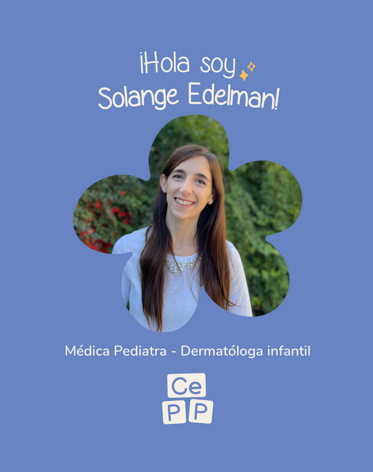
Hola! 🤗 Soy Solange Edelman, Sol para todos los que me conocen. Tengo 36 años y nací en Zárate
De chica me gustaba mucho pasar el tiempo con niños y decía que iba a ser maestra jardinera. Sin embargo, cuando termine la secundaria empecé a estudiar farmacia. Al poco tiempo me di cuenta que no era lo mío y me cambié a medicina, mi verdadera vocación.
Cuando tuve que elegir la especialidad no había dudas: ¡era pediatría!
Cursé la residencia en mi querido Hospital Garrahan, donde aprendí que la pediatría era mucho más que evaluar la salud de los niños, era acompañarlos junto a sus familias y cuidarlos de manera integral. Allí conocí y me formé en dermatología pediátrica, la cual me fascinó desde el primer momento y desde entonces es mi gran pasión.
Hace un año y medio nació Lorenzo, quién me enseño, entre muchísimas otras cosas, a ser mamá y mejor pediatra. 🥰
Con mi familia conocimos Puertos, lugar donde decidimos establecernos para vivir y criar a Lolo.
Conociendo el barrio no había dudas que faltaba algo, un lugar cercano donde todos los chicos que son parte de esta hermosa comunidad puedan ser atendidos de manera integral, por especialistas pediátricos que puedan acompañarlos durante su desarrollo y crecimiento a la adultez.
Gracias a Car y a mi Familia por ayudarme a cumplir este sueño. ¡Espero que todo el amor con el que fue pensado y creado CePP pueda ser transmitido y compartido con ustedes! 💙
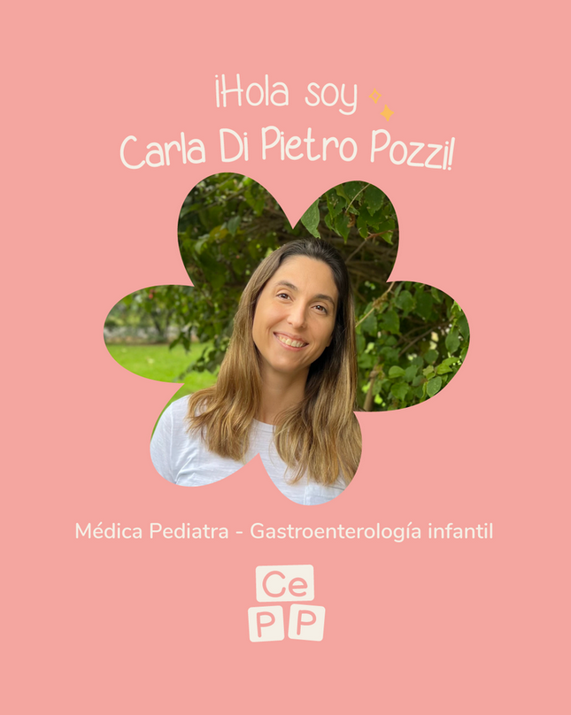
Soy Carla Di Pietro Pozzi, tengo 36 años, soy mamá de valentina de 2 años y medio, esposa de Fernando, hija, hermana y amiga. Y para seguir sumando, también, soy médica pediatra especialista en Gastroenterología.🙌
👉Estudié medicina en la Universidad Austral y, sin dudarlo, una vez terminada la carrera, decidí realizar mi especialidad en pediatría. ¿Por qué? Porque los niños son los seres más dulces y sinceros del mundo. Muchas veces, sólo con mirarlos, uno puede saber qué les pasa y ayudarlos a sentirse mejor.
Hice mi residencia en el Hospital Naval que fueron 4 años de muchas guardias, aprendizajes y sobre todo muchas nuevas amistades. Al finalizar, supe que aún tenía mucho por aprender, así que decidí embarcarme en una Maestría en Gastroenterología, Nutrición y Hepatología Pediátrica. Y así, sin buscarlo, terminé especializándome en Gastroenterología Infantil.
Llevo varios años trabajando en una institución privada en la capital federal y, como buena emprendedora, junto a mi socia, decidimos abrir las puertas de este proyecto. Nuestro objetivo es acompañarlos en el crecimiento de sus hijos, brindando una crianza respetuosa y cariñosa. 💞
Queremos ofrecerles todas las herramientas que están a nuestro alcance, no solamente como médicas especialistas, sino también como madres.
Estamos emocionadas por esta nueva etapa y esperamos poder ayudarles a construir un futuro saludable y feliz para sus hijos. 🤗
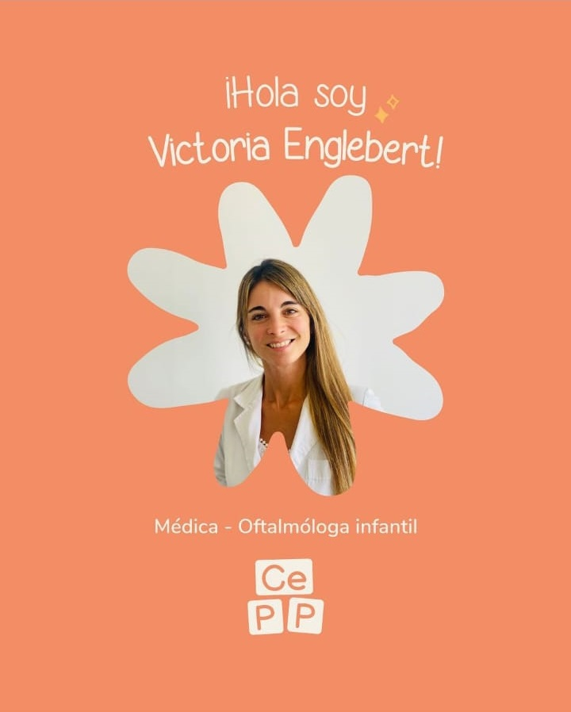
Soy Victoria Englebert 👩⚕️, una apasionada de la medicina.
Estudié en la Universidad de Buenos Aires, donde me gradué como médica. Mi interés por la oftalmología me llevó a realizar la residencia en el Hospital Churruca-Visca, donde adquirí experiencia y conocimientos en este campo.
👉En mi búsqueda constante por brindar la mejor atención a mis pacientes me llevó a obtener el título de especialista en Oftalmología de la SAO-UBA. Sin embargo, no me detuve ahí. Decidí especializarme aún más en Oftalmología Infantil, Estrabismo y Prematuros, y realicé una Maestría en el Hospital Italiano de Buenos Aires. 🙌
Mi compromiso con la excelencia me ha llevado a participar en numerosos talleres, jornadas y congresos relacionados con la oftalmología.
Siempre estoy en constante formación para estar al día con los avances y ofrecer a mis pacientes la mejor atención posible.✨🤗
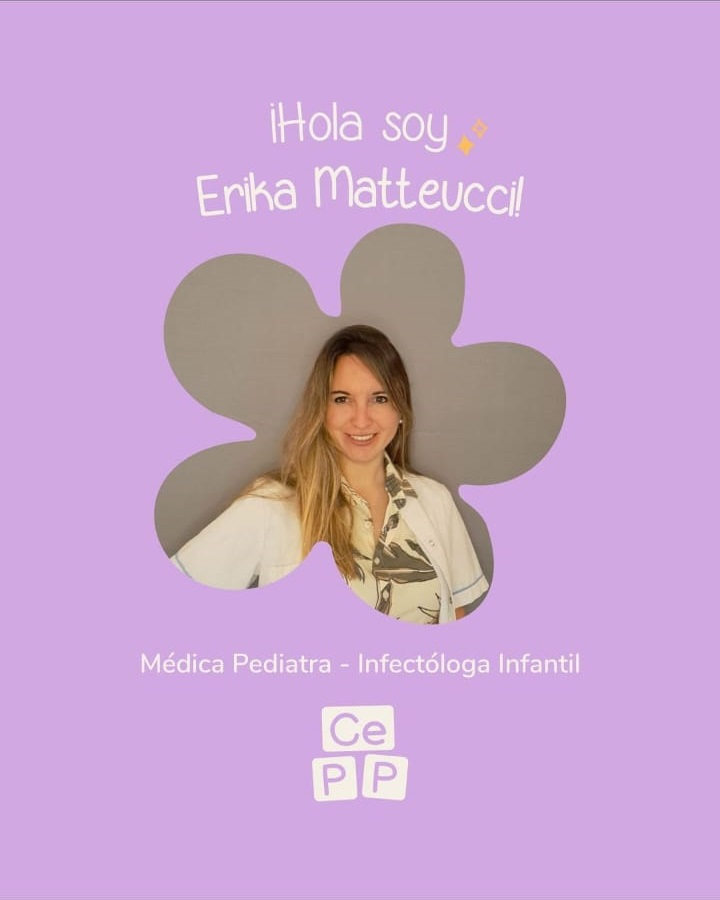
Soy Erika Matteucci, tengo 34 años y soy oriunda de Tucumán. 🙌
Fue en esta provincia donde crecí y tuve la oportunidad de estudiar medicina en la prestigiosa Universidad Nacional de Tucumán. Sin embargo, mi búsqueda por adquirir conocimientos y experiencia me llevó a dar un gran paso: mudarme a Buenos Aires para formarme en el Hospital Garrahan, un lugar al que siempre anhelé pertenecer.✨
Después de esta gran experiencia, continué mi especialidad en Infectología Pediátrica en el Hospital Elizalde o ”Casa Cuna” para los que lo llevamos en el corazón.
👉En la actualidad, me desempeño como médica de planta en Infectología Infantil en el Hospital Churruca y Balestrini.
Estoy sumamente emocionada por el nuevo desafío de acompañarlos junto a un equipo de profesionales de confianza, con quienes trabajaremos en equipo para mantener la salud de sus niños. Cada consulta será una oportunidad para enfocarnos en su bienestar y en la prevención.👩⚕️
¡Estoy ansiosa por conocerlos y brindarles una atención integral y de calidad a sus niños! 🤗
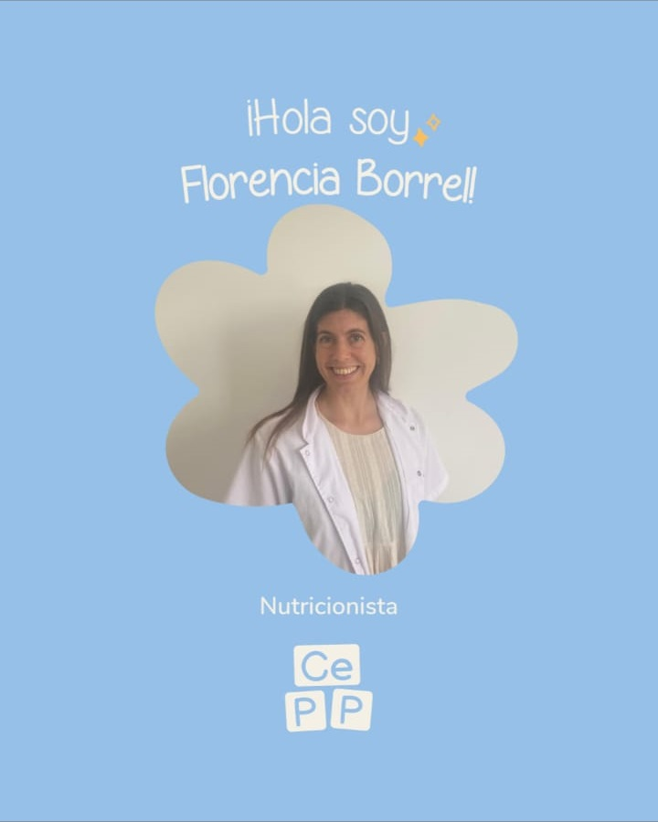
¡Hola a todos! 👋Soy Florencia Borrell y estoy muy contenta de formar parte de este equipo!
🥑Soy Licenciada en Nutrición, me recibí en la UBA e hice mis prácticas profesionales en el Hospital Fernández y en el Hospital Militar.
Trabajé en varias áreas de la nutrición, pero definitivamente lo que me apasiona es el consultorio y la educación alimentaria. Uso un enfoque integral para evaluar las necesidades de cada chico teniendo en cuenta su salud, hábitos y entorno.
Creo firmemente en la importancia de establecer una relación saludable con los alimentos desde la niñez. Esto es clave para tener adultos sanos en el futuro. Mi propósito es darles herramientas a toda la familia para que esto suceda y acompañarlos en el proceso.
¡Los espero en el consultorio! 🥦🌽🍅
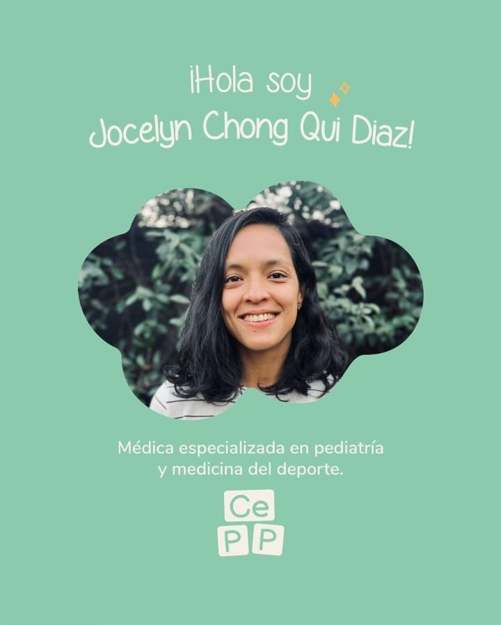
¡Hola! Soy Jocelyn Chong Qui Diaz, Médica Especialista en Pediatría y en Medicina del Deporte.🏈🏑
🎓Me recibí como médica en la UAI, para luego hacer la residencia de pediatría en el Hospital Manuel Belgrano. Continué con mi formación haciendo un posgrado en Medicina del Deporte, en la UCA. Actualmente me sigo especializando en la Universidad Favaloro, haciendo la Diplomatura en Medicina del Deporte Infanto Juvenil.
¿Por que decidí especializarme en Deportología infantil? ⚾️ ⚽️
Porque une mis dos pasiones: el cuidado de las infancias y el deporte que, proviniendo de una familia de deportistas, estuvo tan presente en mi propia infancia.
Mi objetivo es acompañar y guiar a los niños deportistas y a sus familias para que puedan potenciarse y disfrutar del deporte de una manera divertida, pero sobre todo saludable y con los cuidados necesarios.
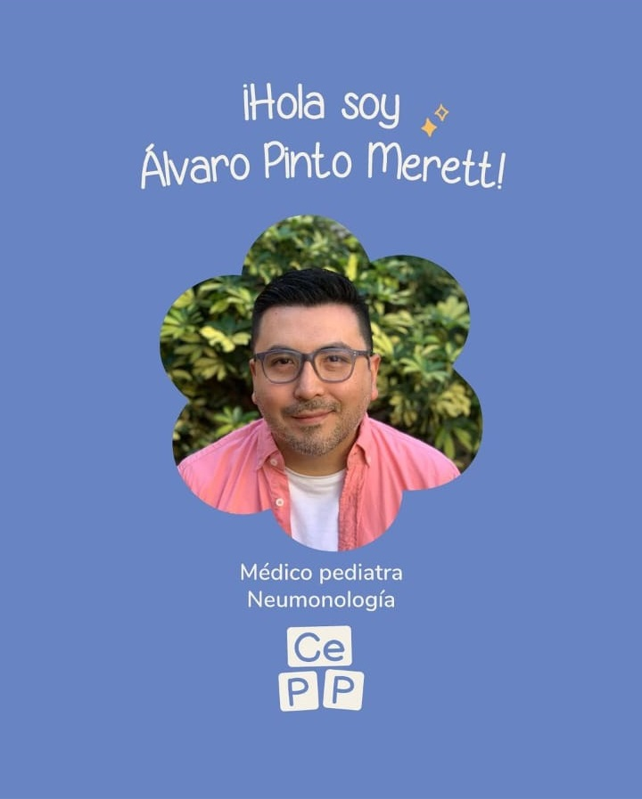
Soy Alvaro Pinto Merett. Tengo 37 años. Soy de La Paz, Bolivia y me recibí de médico allá, en la Universidad Nuestra Señora de La Paz.
Siempre quise trabajar con niños pues tienen una magia única así que pediatría era el camino a seguir.✨
Con este sueño me mudé a Buenos Aires junto a mi esposa Gabriela y vivimos en este hermoso país hace ya 10 años. En este camino nació nuestra hija Cielo que tiene 5 añitos.
Hice mi residencia en pediatría en el Hospital Manuel Belgrano de San Martín y luego me especialicé en Neumonología 🧑⚕️en el Hospital de Niños Ricardo Gutiérrez.
¡Estoy emocionado por formar parte de este hermoso proyecto!
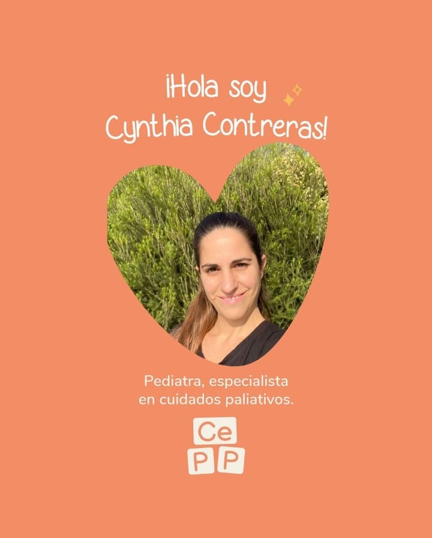
🌈💕Soy Cynthia Contreras, tengo 36 años y con mi marido Santiago somos papás de Benjamin de 5 años y de Pilar de 3. 👨👩👧👦
Además soy pediatra, especialista en cuidados paliativos.
Estudie medicina en la UBA 🏥✨ e hice la residencia de pediatría en Cemic.
Durante la misma me toco acompañar niños con enfermedades graves e incluso viví esa experiencia en mi familia. Así conocí los cuidados paliativos y tuve la posibilidad de formarme en el hospital Garrahan. Aprendí a acompañar a los niños y sus familias en enfermedades limitantes y complejas focalizándome en la calidad de vida y su bienestar. 🌼🩺 También me forme en el tratamiento del dolor que es uno de los síntomas más difíciles e importante de tratar.
Sumado a la especialidad, la maternidad me dio una mirada más empática y me impulsó a querer acompañar a los niños y sus familias desde una mirada integral. 🌟👶
Estoy feliz de poder sumarme al CePP y desplegar mi vocación de pediatra y especialista de cuidados paliativos y control del dolor. 💖
¡Te espero en Ce.P.P! 🧸
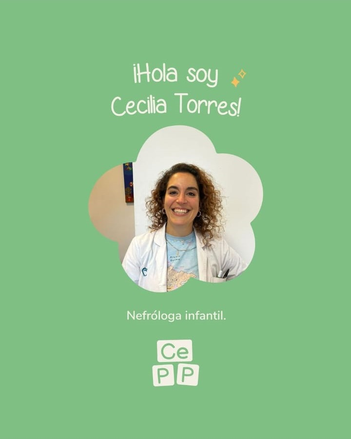
¡Hola! 🙋🏽♀️
Soy María Cecilia Torres Perez (todo el mundo me conoce como Ceci), tengo 33 años y soy de Bahía Blanca.
Estudié 📚en la Universidad Nacional del Sur y en 2015 me mudé a Buenos Aires para empezar la residencia de pediatría 👩🏽⚕️ en el Hospital de Niños Pedro de Elizalde, más conocido como “Casa Cuna” 🏠❤️
Siempre me pareció muy interesante el manejo del medio interno, y la función del riñón, al que llamó “el gran filtro” de nuestro cuerpo, y como me gustó mucho el hospital, en octubre de 2020 empecé la residencia de Nefrología Infantil.
Además, soy fan de la música 🎶🎵 y me gusta mucho cantar 🎧🎤❤️
Me entusiasma mucho sumarme al gran equipo de profesionales del centro, trabajando en la promoción de la salud renal y prevención de las enfermedades crónicas 🧩
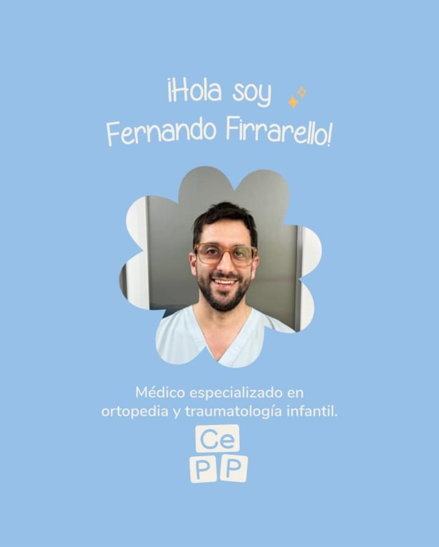
¡Hola a todos! 👋 Soy Fernando Firrarello.
Médico recibido en la Universidad de Buenos Aires. Realice mi residencia en el hospital de trauma y emergencias de Malvinas Argentinas.
Luego me formé en ortopedia y traumatología infantil en el hospital de Niños Ricardo Gutiérrez, lugar donde trabajo actualmente.🏥🩺
Soy miembro de la AAOT y SAOTI y asisto a diversos talleres y jornadas para mantenerme siempre actualizado 📚. ¡La formación continua es clave en mi carrera! 📆
¡Los espero a todos en Ce.P.P! 🦴
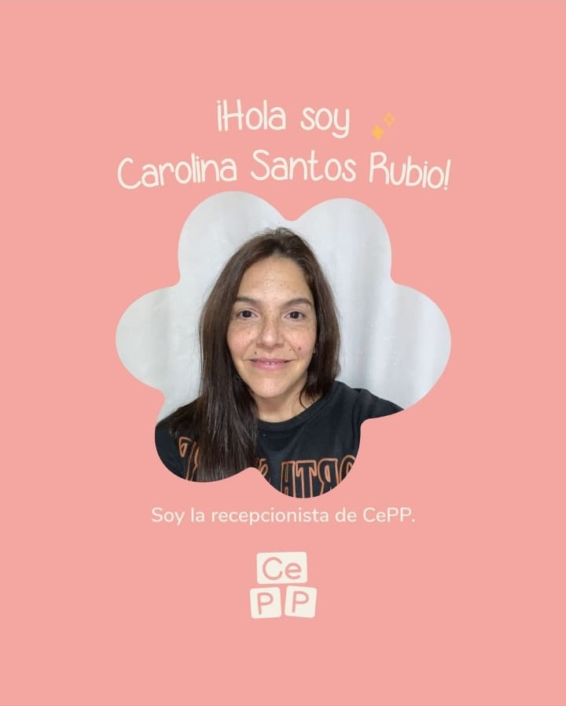
¡Hola a todos! 🙌 Soy Carolina, la secre de Ce.P.P.
Les cuento un poco sobre mí, hace 10 años que estoy en pareja y tengo 2 hermosas sobrinas que amo profundamente. 🥰
Me encanta hacer talleres de pintura y cerámica 🎨 porque son mi cable a tierra ✨ y también hago ejercicio a diario.
Estoy súper feliz 😄 de formar parte de este gran y hermoso proyecto junto a las Dras. Sol y Carla.
Ya sea a través de un mensaje o con una sonrisa en nuestros consultorios, voy a estar ahí para recibirte🧩🧸
¡Los esperamos a todos!
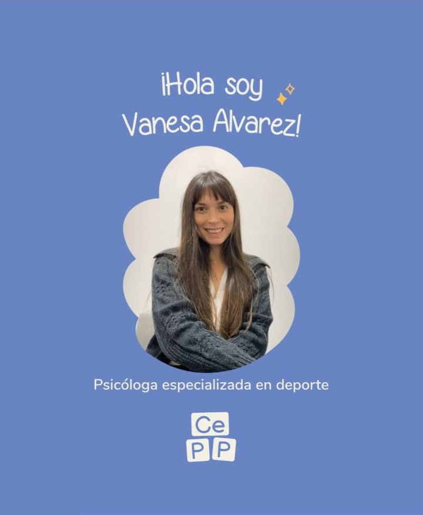
Hola, soy Vanesa Alvarez, tengo 33 años y soy Licenciada en Psicología graduada de la UM. Decidí continuar mi formación en APDA para especializarme como psicóloga en deporte y actividad física. 😊 (Una anécdota: a los 15 años, vi una entrevista con la psicóloga de las leonas y le dije a mi mamá: "Quiero ser como ella". Unos años después y con más herramientas, estoy haciendo lo que amo y me apasiona). 🌟
En mi rol como psicóloga deportiva, me esfuerzo al máximo para potenciar las habilidades mentales de los deportistas y así mejorar su rendimiento. 🏋️♀️ ¿Cómo se entrena la mente? Trabajando con factores psicológicos. Los factores en los que intervenimos incluyen:
➡️ Autoconfianza
➡️ Motivación
➡️ Atención y concentración
➡️ Toma de decisiones
➡️ Lesiones (es fundamental el apoyo en este momento)
➡️ Gestión emocional
➡️ Comunicación
➡️ ¡Y mucho más! 💪
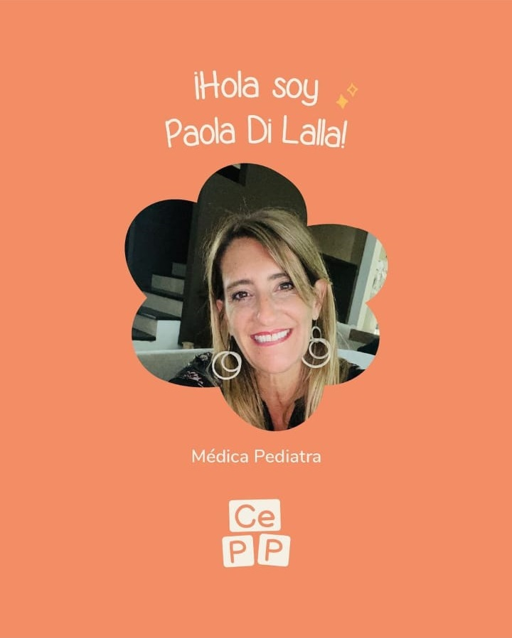
👋 Hola, soy Paola Di Lalla, tengo 48 años, soy mamá de 4 y pediatra. 👩⚕️
📚 Estudié medicina en la UBA y luego hice la residencia de pediatría en el Hospital Castex de San Martín, donde trabajé como jefa e instructora de residentes.
Me encanta trabajar con niños y acompañar a los papás en el crecimiento y desarrollo de sus hijos. 🤗
🏥 Actualmente, trabajo en Fleni, donde me dedico a la atención y seguimiento de pacientes en neurorrehabilitación. 💪
😃 Estoy muy contenta de estar en este espacio para hacer lo que más me gusta. 🌟
¡Los espero! 🙌
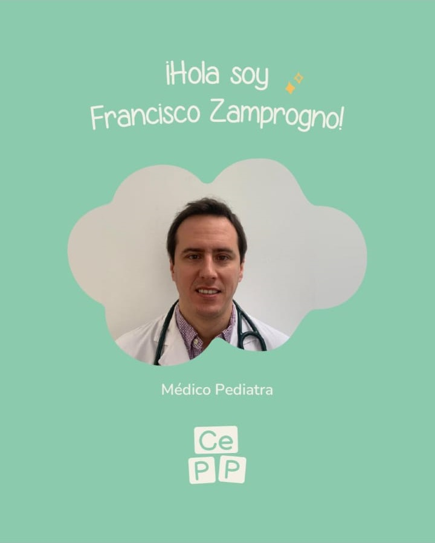
¡Hola a todos! 👋 Soy Fran Zamprogno, tengo 36 años y soy esposo de Mary y papá de Pipe y Anita.
Soy fanático River ⚽️❤️.
Nací en Entre Ríos, y desde muy chico vivo en Buenos Aires.
🏫Estudie medicina en la UBA, y luego hice Pediatría en el Hospital Naval Pedro Mallo. Posterior a eso pase como becario de Terapia en el hospital Garrahan y actualmente me dedico a hacer traslados aéreos sanitarios y a la investigación clínica.
Creo que el consultorio es ese espacio donde podemos generar esa relación médico-familia tan necesaria para la atención a nuestros chicos. ✨
Estoy sumamente entusiasmado por empezar a trabajar en este equipo. Y agradecido por dejarme ser parte.☺️🌟
Los espero a todos en Ce.P.P! 🙌
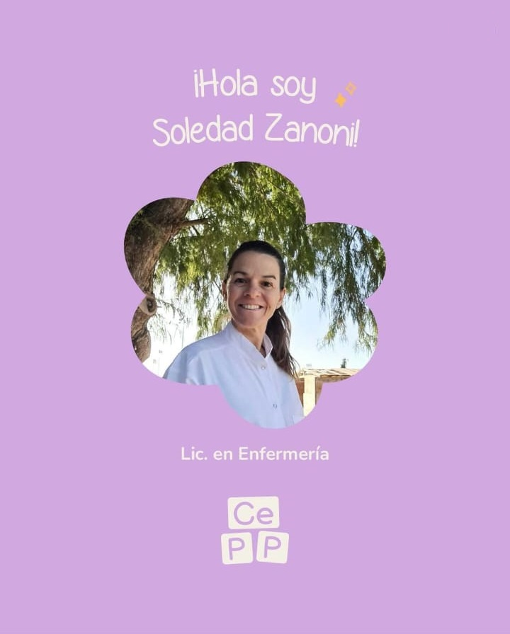
Soy Soledad Zanoni. Tengo 45 años y soy Licenciada en Enfermería.🩺
🏫Me recibí en la Universidad Austral, en el año 2002.
En mis inicios, colaboré con la puesta en marcha del Hospital Universitario Austral, lo que me brindó una experiencia única.
Realicé rotaciones en España y USA, lo que me permitió conocer la Enfermería de otros países.🌎
Luego y por varios años me dediqué a la Enfermería Oncohematologica, en una Institución de gran prestigio, como es Fundaleu, y es allí donde inicié mis pasos en la Gestión.
Los últimos 5 años me desempeñé como coordinadora de enfermería en Programas de Soporte a Pacientes, ganando experiencia en un ámbito en el que nunca me había desarrollado.
Hoy priorizo seguir trabajando de lo que me apasiona y poder brindar cuidados con profesionalismo y calidad.
Quiero poner toda mi experiencia y conocimientos a disposición y estoy muy entusiasmada con la apertura del CE.P.P ✨☺️
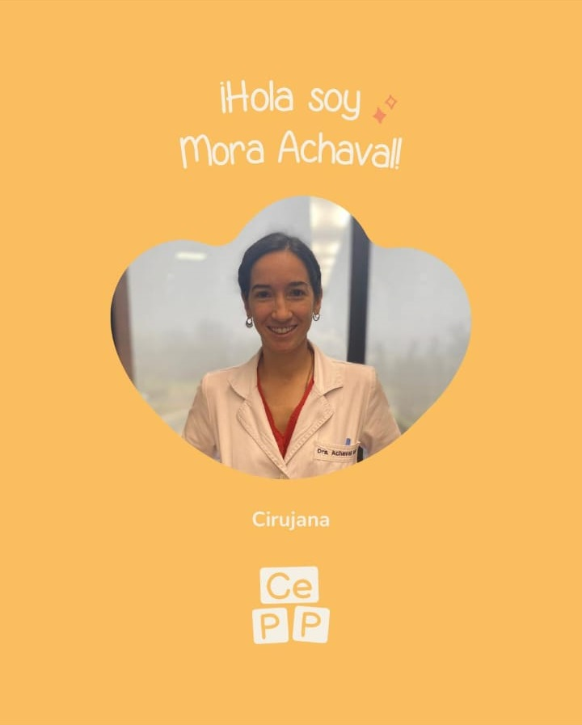
Mi nombre es Mora Achával. Médica recibida en la Universidad Austral.
🏥Realicé mi residencia de Cirugía general en el Hospital universitario Austral y continué ahí mi formación en cirugía y urología pediátrica.
Trabajó tanto en el sector público como en el privado y disfrutó mucho de los dos.
🤗Estoy muy entusiasmada con formar parte de este grupo de especialistas y poder brindarles una atención integral.
¡Los espero a todos en Ce.P.P! 🙌
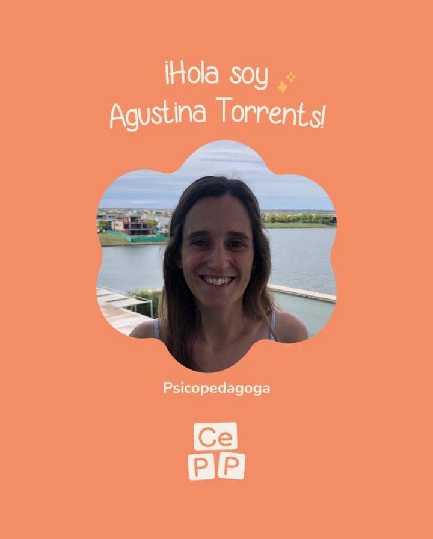
¡Hola! Soy Agus Torrents, tengo 37 años y junto a Gastón formé una familia siendo mamá de Delfi y Tomi.💙
Soy licenciada en psicopedagogía, de la Universidad Católica Argentina (UCA) y me especialicé en Terapia Cognitiva Conductual en el Hospital Garrahan.
Con más de 10 años de experiencia en acompañamiento escolar, clínica y evaluación psicopedagógica, hoy acompaño a niños y adolescentes en su proceso de aprendizaje, inclinándome a una orientación Neurocognitiva 🧠
🏑Jugué muchos años al hockey, donde aprendí la importancia del equipo y el respeto por cada uno. Viví grandes experiencias e incorporé valores que aún son un pilar fundamental en mi vida.
Estoy muy contenta de formar parte del equipo de CePP, con muchas ganas de seguir aprendiendo y seguir de cerca el crecimiento y desarrollo de los chicos y sus familias. 🙌
¡Los espero a todos en nuestros consultorios! ✨
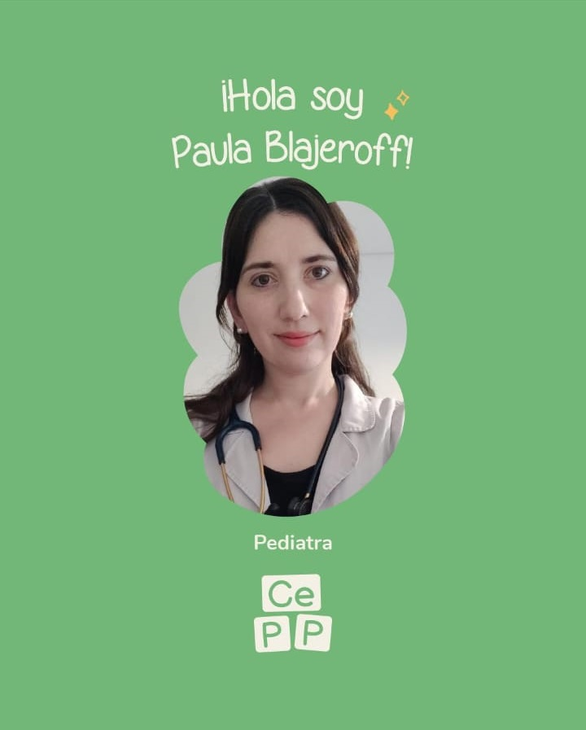
Hola! 👋 Soy María de los Angeles Durso, tengo 57 años, estoy casada y soy mamá de Santiago y María Victoria. 🤗
Soy Licenciada en Fonoaudiología 👂me recibí en la Universidad del Salvador.
👩⚕️Realice mis prácticas en los Hospitales Castex, Argerich, Ramos Mejía y Clinicas. En mis comienzos trabajé en la rehabilitación del lenguaje en niños.
En la actualidad me dedico a la Audiología clínica en adultos y niños y audiología laboral, desempeñandome en varias empresas del sector.
🐣También realizo Otoemisiones Acústicas en bebes.
Estoy muy contenta de formar parte de este equipo de profesionales.
¡No duden en consultarme, los espero!
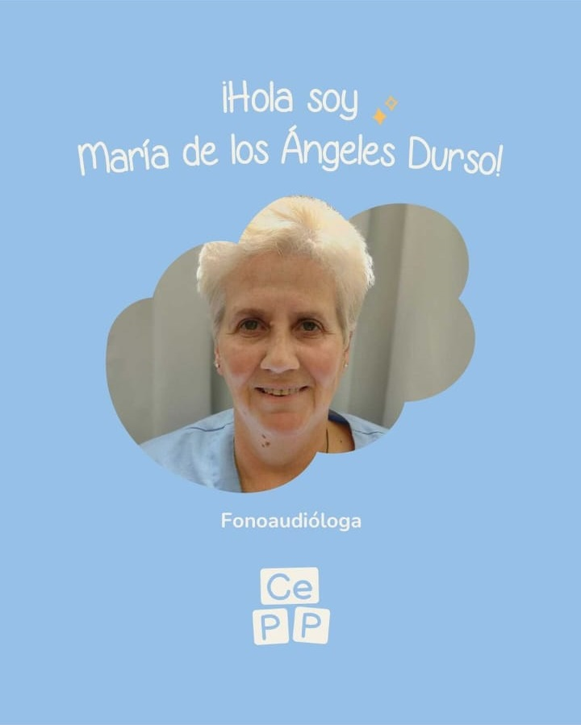
¡Hola a todos! ☺️
Soy María Paula Blajeroff tengo 36 años tengo dos hermosos hijos León de 5 años y Fidel de 3 años.
Soy pediatra.👩⚕️
Desde que nací me crié viendo a mis padres como profesionales de la salud, cuidar y acompañar familias. Eso me generó mucha admiración y ganas de seguir ese ejemplo de ayudar y cuidar al otro. Además de esos valores conforman una Cátedra Universitaria de Ciencias de la Salud conformada por más de 40 profesionales.
Dentro del proyecto de Universidad de familias( UFAM). De la cual soy parte y participo en esa formación académica.
🏫Estudie medicina en la UBA. Hice la residencia de pediatría en el Hospital de niños Claudio Zin, Malvinas Argentinas.
Trabajo ya hace seis años en Escobar, dedicándome a la salud de los niños 👶🏼 👧🏻. En consultorio en consultas de niño sano. Y en el hospital coordino el Área Pediátrica de guardia, urgencias y emergencias de un Centro de Salud de Matheu.
Me interesa mucho la prevención de la salud. Ser referente y orientar a las familias, acompañando en cada etapa a los padres.
Para que tengan herramientas y se sientan seguros en el cuidado de sus hijos.🫶🏻
Estoy muy contenta por ser parte de este equipo. ✨🙌
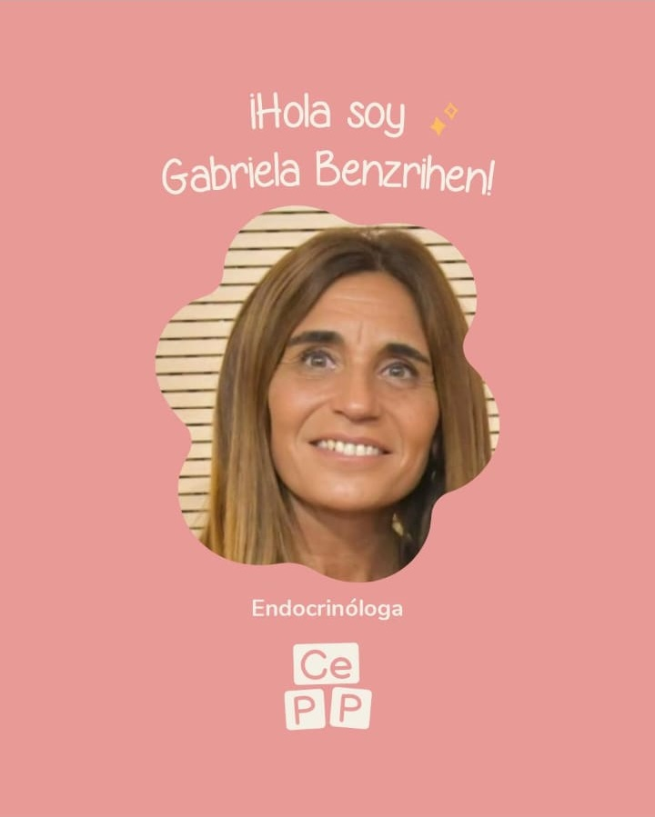
Soy Maria Gabriela Benzrihen, médica pediatra endocrinologa. 👩⚕️
Estudié medicina en la Universidad de Buenos Aires . Ya estando en cuarto año supe que me iba a dedicar a los niños 👶🏼 y así fue como hice mi residencia en el Hospital Posadas donde tambien realicé mi fellowship en Endocrinología.✨
Es una especialidad que me fascinó por lo integral y completa que es, muy vinculada con el crecimiento y desarrollo de los niños y adolescentes.
También hice una maestría en esta especialidad en la Universidad Austral.🏫
A lo largo de todos estos años de formación formé una familia ...tengo 5 hijos, ya hoy todos más grandes y tuve la alegía de ser abuela de Lucas☺️ ..hijo de mi hija mayor.
Nunca dejé mi actividad hospitalaria la cual me apasiona ademas de mi trabajo en área privada, siempre tratando de poder hacer trabajo en interdisciplina para una mirada de los pacientes más integral y en equipo. 🙌
Hoy, a 30 años de haber egresado de mi carrera de médica sigo eligiendo esta profesión con mucha alegría y pasión.
Los espero a todos en Ce.P.P 👩⚕️✨
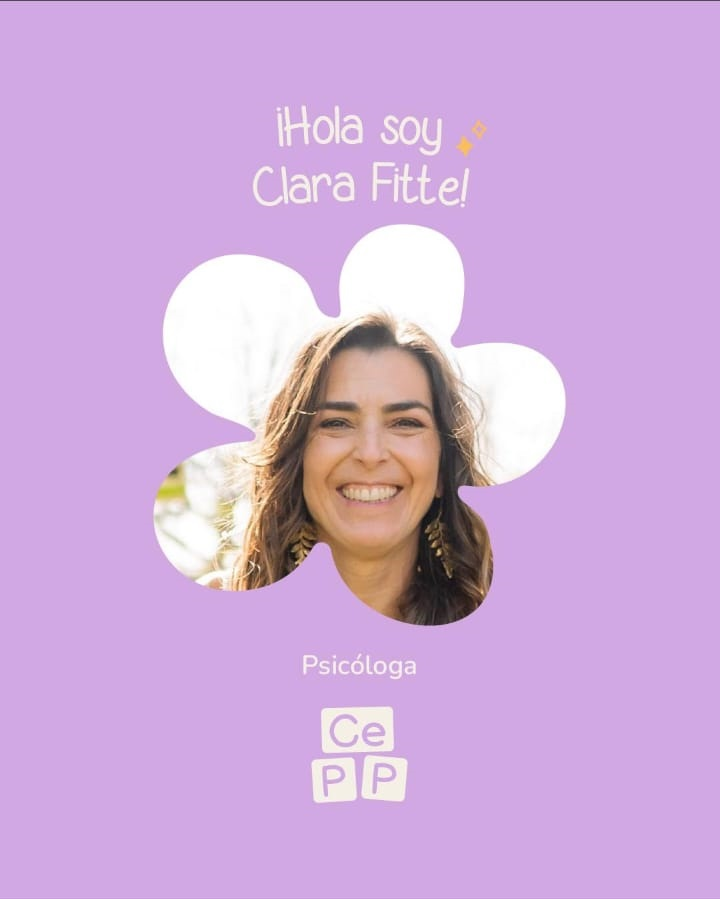
👋🏻 Soy Clari Fitte, tengo 39 años, casada con Agustín y soy Lic en Psicología de niños, Adolescentes & Jovenes adultos 👩🏻🏫
♥️ Soy apasionada de mi trabajo.
🧰 La posibilidad de ser valijita de herramientas para niños, adolescentes y orientar a padres, es mi motor para seguir fomandome año a año 📖
👩🏻🏫 Me recibí en la UBA en el 2007; hice la especialización en Psicopatología Infanto juvenil, me forme en TCC especializándome en evaluación y detección temprano de Autismo y tiempo después, la Maestría en Neuropsicología aplicada a la clínica 🧠 y hace dos años comence la formacion en el modelo EMDR, en el cual estoy certificada desde diciembre 2022.
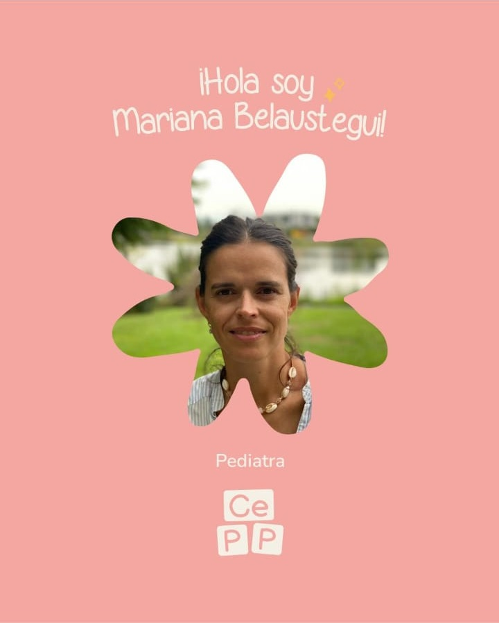
Me formé en el Hospital Austral👩🏻🏫 donde sigo trabajando actualmente. Me encanta la Pediatría ambulatoria y también doy cursos de RCP y primeros auxilios a domicilio.
Estoy muy entusiasmada con formar parte de este grupo de especialistas y poder brindarles una atención integral. ✨
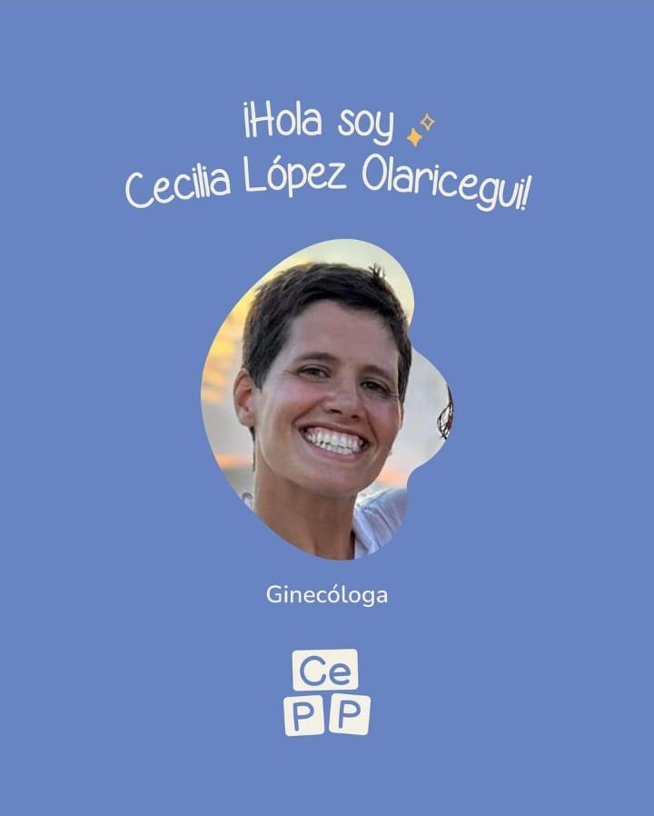
Hola soy Cecilia Lopez Olaciregui, ginecóloga y obstetra recibida en el CEMIC. 👩🏼⚕️
Actualmente me especializo en ginecológica infanto juvenil.
Estoy muy contenta ☺️ de sumarme al equipo de CePP para trabajar en conjunto con todos los especialistas del equipo.
Los espero! ✨
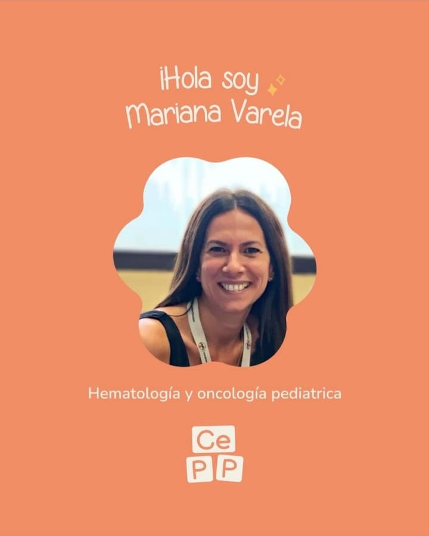
✨ Mi nombre es Mariana Varela y es un honor para mí unirme al equipo de CePP como hematóloga y oncóloga infantil.
Me he formado en la Universidad de Buenos Aires y Actualmente soy la Jefa 👩🏼⚕️ de oncología y hematología infantil del Hospital Universitario Austral.
✨ Entiendo que enfrentar una enfermedad puede ser un desafío enorme, especialmente para los niños 👦 y sus seres queridos. Por eso, mi enfoque no solo se centra en el tratamiento médico, sino también en ofrecer apoyo emocional y ser una fuente de esperanza 🤍 y fortaleza.
✨ Estoy muy emocionada por la oportunidad de colaborar con este equipo excepcional y contribuir al bienestar y recuperación de nuestros pacientes.
Estoy aquí para lo que necesiten y espero conocernos mejor muy pronto.🤍
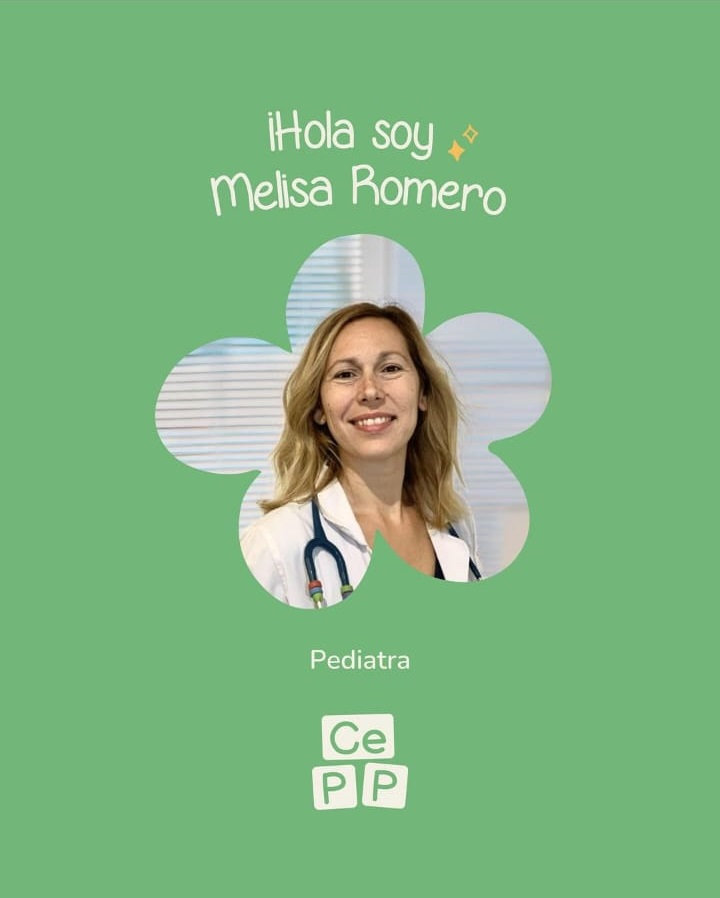
Hola soy Melisa Romero médica pediatra 👩🏼⚕️ y te quería contar un poco sobre mi, así me conoces mejor.💜
🏥 Me forme como medica en la UBA y luego me especialice como pediatra en el Hospital de Niños Pedro de Elizalde (ex Casa Cuna) donde realice mi residencia y posteriormente la jefatura de residentes. Continuo trabajando en la guardia de dicho Hospital desde ese momento hasta la actualidad.
🏥 También trabajo en el Sanatorio de Los Arcos en el sector de internación pediátrica desde el año 2014.
🌼 Me encanta la pediatría y acompañar el crecimiento y desarrollo en los bebés, niños y adolescentes y aprovecho cada encuentro con las familias para acercarles herramientas para afrontar las patologías frecuentes que encontramos en la infancia y realizar aportes sobre crianza y hábitos saludables que siempre son necesarios para llevar adelante una infancia sana y feliz
Te espero en el consultorio 🤍
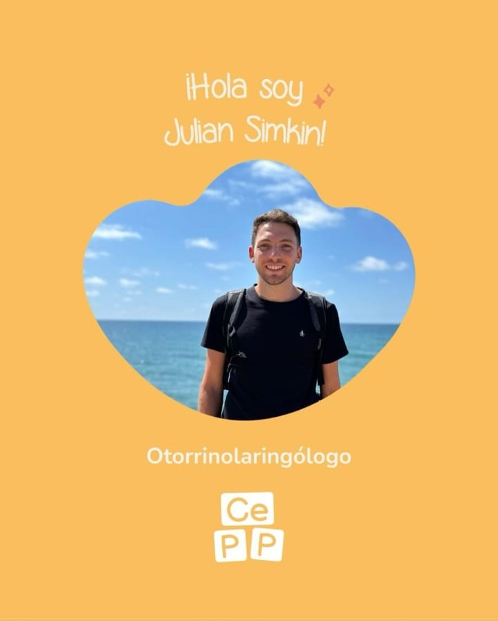
Hola a todos! 👋🏼
Soy Julián Simkin y estoy muy contento de unirme a este equipo.
🏥 Soy otorrinolaringólogo. Me recibí de médico en la UBA. Hice la residencia en el Hospital Italiano de Buenos Aires.
🐔 Soy muy fanático de River y me encanta hacer deporte.
Los espero! ☺️
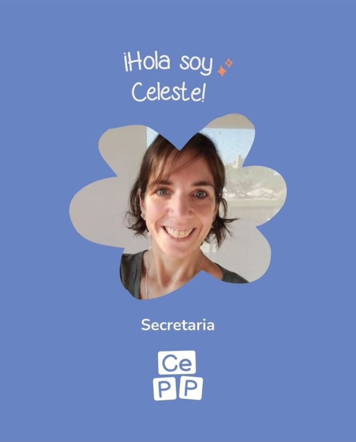
Hola Soy Cele.
Soy Mamá de Juli (14) y Lula (10). Estamos con mi marido juntos hace 23 años.
Soy Maestra 👩🏫 jardinera y trabaje 22 hermosos años rodeada de niños.
✨ En busca de un cambio de vida , nos mudamos y acá encontré la oportunidad de ser parte de este Proyecto tan lindo.
Los espero ansiosa y nos estaremos viendo 🌈❤️🙌
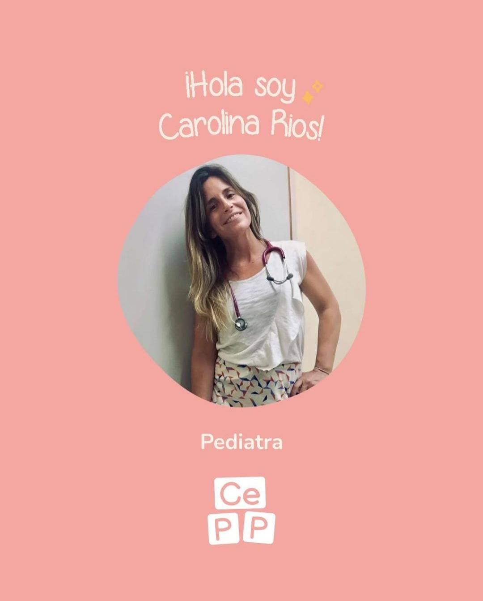
Mi nombre es Carolina Ríos👩🏼⚕️, nací el 4 de noviembre de 1982 y desde muy chica sentí que me iba a dedicar a ayudar a las personas.
👩🏼🎓Me recibí de Médica en la Fundación H. A. Barceló, hice mi formación y residencia de Pediatría en el Hospital Municipal de Malvinas Argentinas, y a partir de ahí sabía que quería dedicarme a la integridad de los chicos en todos sus aspectos.
🩺 Me desempeño como pediatra de consultorio desde hace 14 años. Actualmente formo parte del staff de pediatría ambulatoria del Hospital Universitario 🏥 Austral y siempre continué dando de distintos modos, servicio en instituciones públicas.
💕 Por otro lado, desde hace 5 años, desarrollé mi propia modalidad realizando pediatría integral en las casas de los pacientes, enfocada en la gestión emocional, abarcando los aspectos físico, mental y espiritual tanto del niño 👶🏼 como de su familia.
♥️ Me considero una eterna aprendiz, buscadora de lo oculto detrás de cada experiencia, que se encuentra esperando para lograr el propósito de cada uno.
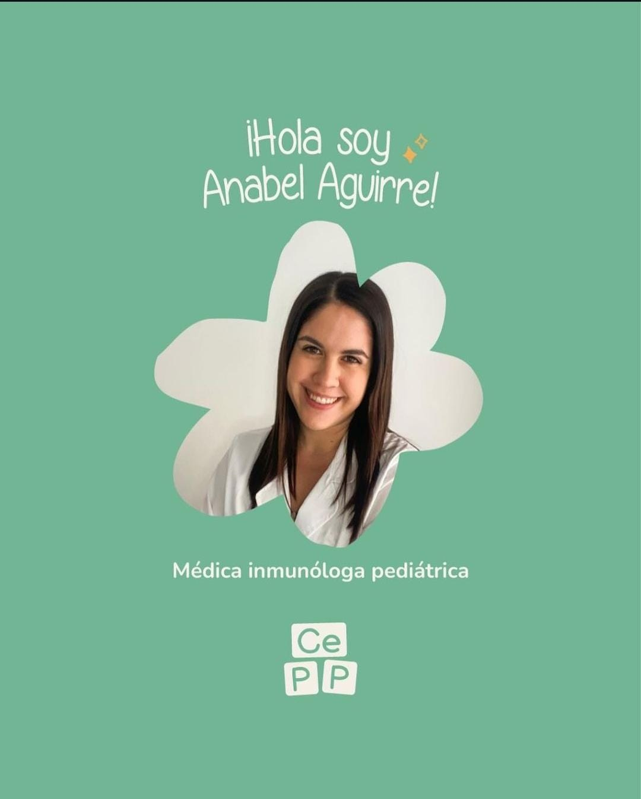
Hola! Soy Anabel 🙋🏻♀️
Nací en la ciudad de Bella Vista, Corrientes 🍊🧉
Me recibí de médica en la Universidad Nacional del Nordeste 📚
Desde hace 8 años el Hospital Garrahan se convirtió en mi segundo hogar 🏥 primero formándome como pediatra, luego como jefa de residentes y actualmente como inmunóloga pediátrica 👦🏻👧🏻
Este largo recorrido de crecimiento personal y profesional me permitió aprender un montón de herramientas, que ahora quiero compartir con vos y tu familia 👩🏻⚕️
Me entusiasma mucho formar parte del CePP porque no hay mejor estrategia de salud que aquella que busque la atención integral e interdisciplinaria 💫
Te espero en el consultorio! ✨

Hola! 👋🏻 Soy Florencia Judez 🤍
👩🏼🎓Me recibí como psicóloga de la UBA en el año 2009.
💫 Siempre estuve vinculada a niños 👦 y adolescentes 👩🏼 ya que también soy docente de nivel primario.
💫 He formado parte de distintos equipos de orientación en colegios.🏫
💫 Realicé el posgrado prolongado en psicoanálisis en el Htal de Salud Mental N°3 “Ameghino”.
💫 Mi desarrollo profesional siempre estuvo ligado al trabajo con niños y adolescentes; así como también acompañando a las familias 🧑🧑🧒🧒desde la orientación a padres.
Te espero en el consultorio! ✨
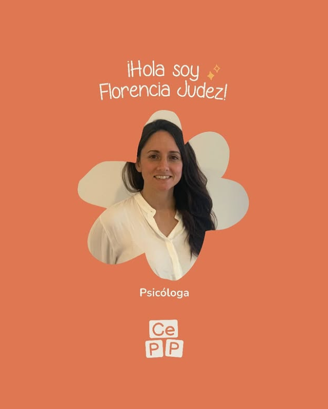
👋🏻Hola! Mi nombre es Mariela.
😊 Estoy muy contenta de sumarme a este equipo de profesionales!
✨ Soy kinesiologa, estudie en la Universidad 👩🏼🎓 del Salvador. Me recibi en 2007 y desde ese día comence a trabajar con bebes y niños.
✨ Disfruto mucho de mi profesión, desde muy chiquita supe que quería dedicarme a esto .
Te espero en el consultorio! ✨

¡Hola a todos!
👋🏻Mi nombre es Sofia, tengo 21 años y para la sorpresa de muchos estoy casada con mi opuesto complementario Facundo. Me encanta leer 📖 en mis tiempos libres y cocinar 🥘 algo nuevo y distinto.
Tengo en meta muchos proyectos futuros, que gracias a la oportunidad de las Dras Carla y Sol que me dieron de formar parte en Cepp, voy a conseguir cumplirlos! ✨
🥳 Soy la secretaria de la tarde en Cepp, y estoy aquí para asegurarme de que cada visita sea tan cómoda y agradable como sea posible. Siempre encontrarás en mí una sonrisa 😊 de oreja a oreja como una mano amiga para resolver tus dudas y facilitar cualquier gestión que necesites.
¡Bienvenidos a Cepp donde el cuidado y la atención van de la mano! 🙌🏼
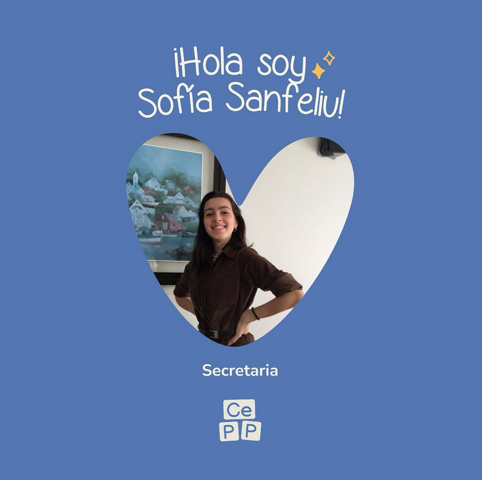
👨🏼⚕️Soy Rodrigo Delaico, médico pediatra. Formado como cardiólogo infantil en el Hospital de Pediatría Prof. Dr. J. P. Garrahan y ❤️ Especialista universitario en Cardiología Infantil (UBA)
Soy staff del servicio de cardiología infantil del Hospital 🏥 Austral, y cardiólogo infantil de planta del Hospital Materno-Neonatal de Pilar
💫 Docente de la Carrera de Medicina, sección Cardiopatías 🤍 Congénitas, de la Universidad Austral, y docente de la Diplomatura de Recuperación Cardiovascular Pediátrica de la Universidad Austral
💫 Mis últimos trabajos de investigación en la especialidad son:
🧑🎓Estudio de Rivaroxaban para tromboprofilaxis en pacientes con fisiología Fontan-Kreutzer (Janssen-Boston Children´s Hospital)
🧑🎓Estudio para evaluar la cardiotoxicidad de Lenvatinib en pacientes con neoplasias malignas (Merck Sharp & Dohme Corp.)
Soy apasionado por los ⚽️🏀deportes, y como tal por la salud cardiovascular propia y la de mis pacientes en la práctica deportiva, para lo cual me capacito constantemente en la materia, y formando parte de Congresos, Jornadas, Cursos, Simposios, Programas y demás, tanto nacionales como internacionales
💫Mi última participación en actividad científica fue este año, como disertante en las 19° Jornadas Regionales del Litoral de la Sociedad Argentina de Pediatría, sobre “Cardiología predeportiva en Pediatría”
💫Es un honor ser parte de este equipo interdisciplinario pediátrico.
Te espero en el consultorio! ✨
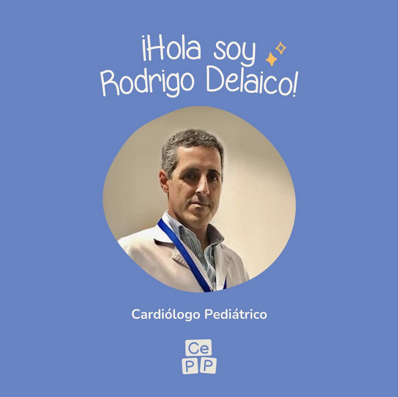
💫 Soy Gisela Floridi, me recibí en la UBA de Licenciada en Psicología con diploma de honor.
Siempre quise dedicarme a la atención de niños y me especialicé en patologías del desarrollo.
🧑⚕️Completé mis estudios con la especialización en Neuropsicología y la formación en Terapia Cognitiva Conductual para el tratamiento del autismo y trastornos del espectro autista (TEA).
Realicé la Diplomatura en Autismo y Síndrome de Asperger en la Universidad de Belgrano, y las certificaciones internacionales para evaluar el ADOS-2 y aplicar PEC’S (sistema de comunicación alternativo y aumentativo).
🧰 Trabajé atendiendo niños y adolescentes en consultorio clínico y como terapeuta de niños con TEA en CET (centro educativo terapéutico) y realizando tratamientos domiciliarios.
💫 Luego de mi experiencia, formé un equipo interdisciplinario de tratamiento para TEA, del cual soy una de las Directoras, hace 15 años, llamado EquiTECI. Coordino y dirijo tratamientos e integraciones escolares, también evalúo a los pacientes con técnicas neurocognitivas.
💫Complementariamente a ello, soy mamá de dos niños (10 y 14 años), lo cual me enseña cada día a seguir aprendiendo.
💫El Arte es otra veta de mi vida que me inspiró, a nivel personal como artista plástica, y a nivel profesional dando clases de arte a niños y adultos.
💫En CEPP me especializo en Evaluación Diagnóstica a través de la técnica ADOS-2, para la cual me certifiqué internacionalmente, ya que considero que un diagnóstico temprano en autismo o TEA ayuda significativamente para el desarrollo y la vida de ese niño!
Los espero para poder brindarles mi atención y afecto!
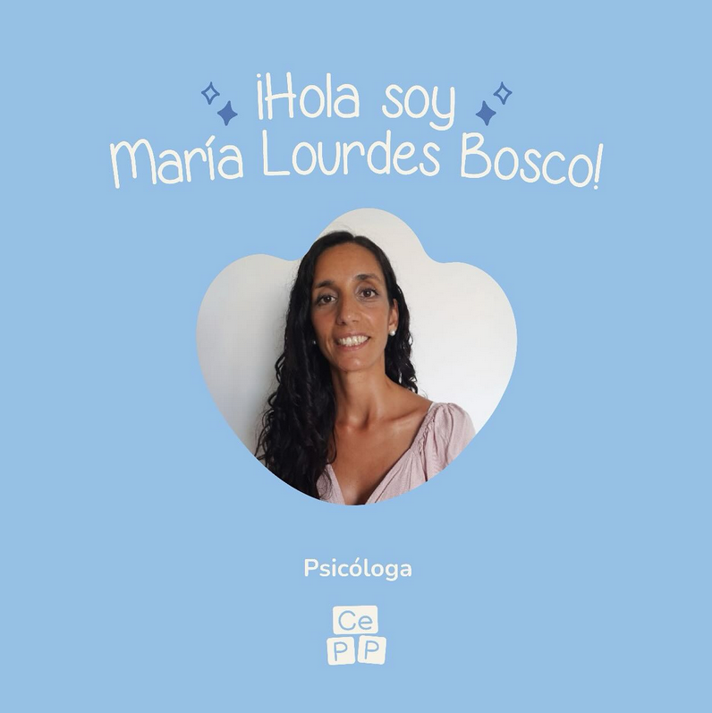
👋🏻 Hola! Soy María Lourdes Bosco, mamá de Francesca y Giovanna, mellizas. Mi mundo entero❤️❤️
💫 Licenciada en psicología, Egresada de la Universidad Buenos Aires en el año 2010.
🏥 Continúe mí formación en el Hospital Italiano, recorriendo los diferentes servicios de salud mental pediátrica y principalmente formando parte del Equipo de la Sala de Juegos Terapéutica en el Servicio de Internación Pediátrica.
💫 Luego realice un curso de posgrado sobre el acompañamiento y la contención emocional de familiares y pacientes con enfermedades orgánicas.
💫Trabaje en el equipo de psicólogos de la Fundación Primeros pasos Delfina Vasallo, acompañando a las familias y a los niños que se encontraban internados o transitando un diagnóstico de enfermedad.
🤍 En mí consultorio trabajo acompañando a familias y a niños que se encuentren transitando un diagnóstico de enfermedad/tratamiento/cirugías.
También acompaño a las familias y los niños en procesos de Duelo y hago Orientación a padres abordando las problemáticas que puedan presentarse en la Crianza.
💫 Me apasiona mí trabajo, poder acompañar y contener emocionalmente a los niños y a sus familias, brindándoles un espacio de escucha, de habla y reflexión.
Estoy muy contenta de poder sumarme al Equipo del Centro Pediátrico Puertos
Te espero en el consultorio! ✨
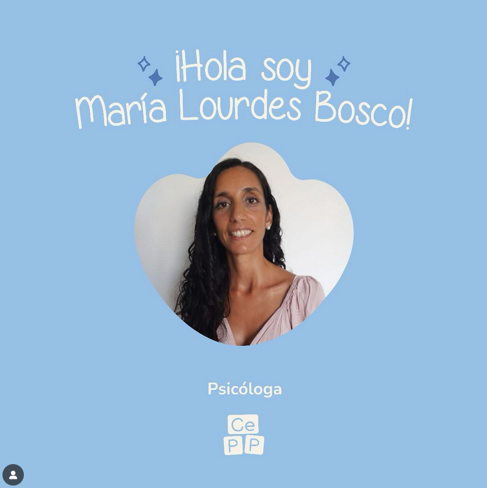
🥰 Mi nombre es Marianela, soy Fonoaudiologa desde hace 27 años con experiencia en la clínica médica y diferentes ámbitos como salud mental, docencia y educacion, ámbito encuestre y pericial.
🤍 Nuestra misiones trabajar en equipo con Amor y responsabilidad para brindarles a cada persona su bienestar personal y pueda desarrollarse sanamente en sociedad. Lograr una comunicación fluida, voz agradable y escucha óptima.
Los espero para poder brindarles mi atención y afecto!
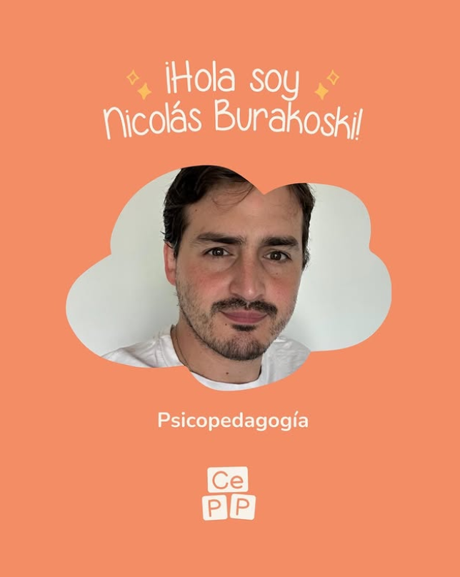
👋🏻 Hola! Mi nombre es Nicolas y soy psicopedagogo, graduado de la Universidad Kennedy, con experiencia en el trabajo con niños y adolescentes.
💫 Mi enfoque se basa en el juego🪀 como herramienta fundamental de intervención, ya que representa una forma de comunicación y un medio importante para el aprendizaje. A través del juego, los niños pueden expresar sus emociones, desarrollar habilidades cognitivas y adquirir conocimientos de manera natural y significativa.
💫 Me desempeñé como orientador de sala en instituciones educativas especiales, brindando acompañamiento psicopedagogico y desarrollando estrategias para optimizar los procesos de aprendizaje. También trabajé en gabinetes escolares, acompañando a niños en sus trayectorias académicas. Mi labor se centró en la adaptación de contenidos y en el desarrollo de estrategias que facilitan el aprendizaje. También soy profesor de introducción a la psicología en el colegio DFS. Y a su vez trabajo en distintos centros terapéuticos, brindando acompañamiento profesional en el abordaje de diversas dificultades del aprendizaje y del desarrollo.
💫 Mi especialización incluye el tratamiento de conductas disruptivas, la orientación a familias y el fortalecimiento de dinámicas familiares. Además, realizo evaluaciones neurocognitivas tanto en niños como en adolescentes, incluyendo orientación vocacional.
🥰 Estoy muy contento de formar parte del equipo del Centro Pediátrico de Puertos, donde puedo también aportar mis conocimientos! 🤍
Te espero en el consultorio! ✨
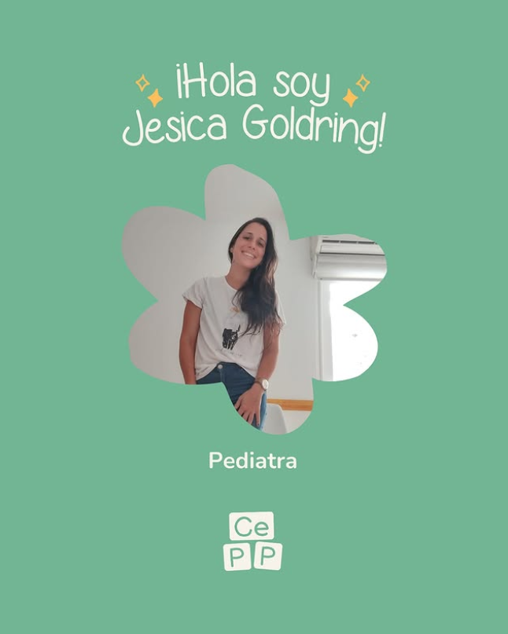
👋🏻 Hola!! Soy Jesica Goldring, les cuento un poco de mi. Soy médica, estudié en la UBA y luego hice mi formación como pediatra.
🏥Hice mi residencia y luego Jefatura de residentes en el Hospital Garrahan. Ahí trabaje un año más como Instructora de residentes. 👩🏼⚕️
📚Trabajé varios años en consultorio y en investigación.
Hice muchas formaciones durante este tiempo: consultora en lactancia en Rame, alimentación BLW, crianza respetuosa, ESI, entre otras.
🤍 Me gusta acompañar a las familias desde un lugar de escucha y compromiso.
💫 Hoy inicio una nueva etapa acá en Puertos, muy contenta de conocer y acompañar a las familias vecinas.
Te espero en el consultorio ✨

Hola! 👋🏻 Soy Caro Donoso, médica especialista en pediatría. Mamá de Bauti y Franco 👦🏼 👶🏼
💫 Estudié medicina 👩🏼⚕️ en la UBA y me formé como pediatra en el hospital Durand, con rotaciones y guardias en el hospital de Niños y en el Hospital Garrahan.
💫Trabajé en consultorio y guardia de Fundación Hospitalaria y en salas de internación de hospitales de CABA. Decidimos luego venir a vivir a zona norte, donde atiendo mayormente consultorio de niño sano, que es lo que más me gusta 😊 ahí puedo sentirme más cerca de las familias , y acompañarlos de forma integral.
Disfruto y amo mi profesión!
💫 Feliz y entusiasmada de ser parte de este hermoso equipo de profesionales! 🏩
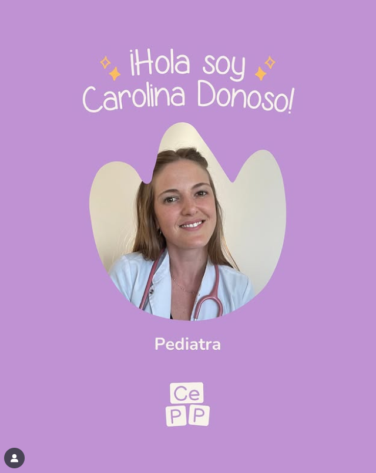
Hola! 👋🏻 mi nombre es Luciana Garcia Rapp, soy médica pediatra. Estudié medicina en la Universidad del Salvador 👩🏼🎓y luego hice mi residencia de pediatría en el Hospital Británico de Buenos Aires.
🩺 Actualmente trabajo en el primer nivel de atención coordinando el Centro de Atención Familiar y de Salud (CAFyS) Juana Manso en el Municipio de Tigre. He hecho guardias en hospitales y clinicas de Caba y al dia de hoy realizo controles de salud particulares y demanda a domicilio de Osde.
🥰 Mi rol es acompañar a las familias apoyando una crianza respetuosa e infancias saludables.
Los espero en el consultorio!! 💜
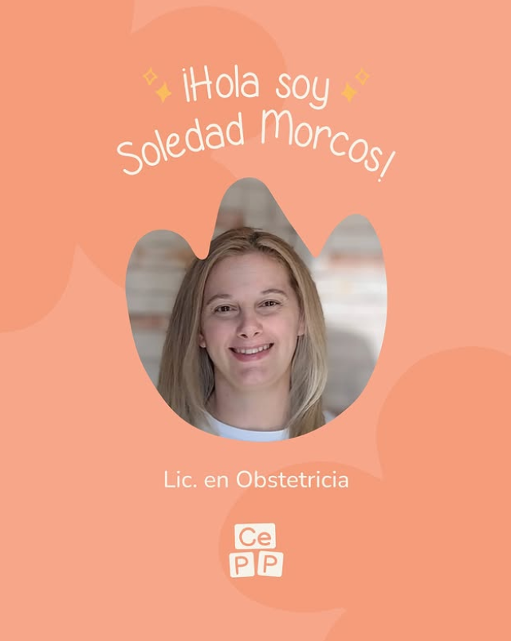
👋🏻 Soy Sole Morcos Lic en Obstetricia, mamá de Pauli y Bauti.
👩🏼🎓Estudie en la Universidad del Aconcagua provincia de Mendoza, realice mis prácticas e inicios de mí profesión en distintos lugares de la provincia.
✈️ Por proyecto familiar me mudé a Buenos Aires. Actualmente me encuentro trabajando en Atención primaria en el Municipio de Tigre, acompañando a mujeres embarazadas a transitar el camino de la maternidad y de su recién nacido.
🤩 Estoy muy contenta de poder formar parte de este equipo, amo mí profesión, te espero para que juntas podamos transitar este momento tan maravilloso.
💫 Hoy inicio una nueva etapa acá en Puertos, muy contenta de conocer y acompañar a las familias.
Te espero en el consultorio ✨

👋🏻Hola, soy Tatiana Lysycky, licenciada en psicología. Me especialice en niñez y adolescencia en el Colegio de Psicólogos de la Provincia de Buenos Aires.
✨Comencé mi experiencia laboral trabajando con niños con TEA en CET (centro educativo terapéutico) y en consultorio. Realice la Diplomatura en Trastornos del espectro autista a lo largo del ciclo vital, en la Universidad de Favaloro.
✨A lo largo de los años realice distintos cursos: acompañamiento en duelos, bullying, crianza respetuosa, psicología perinatal, consultoría en crianza, entre otras. Actualmente me encuentro realizando un posgrado en Detección, prevención y asistencia a niños y adolescentes agredidos sexualmente.
🌟En 2021 forme mi equipo interdisciplinario, Consultorio Integral Minthas, el cual dirijo y coordino.
Desde mayo me encuentran en CEPP, para acompañarlos y brindarles un espacio de escucha y contención.
Te espero en el consultorio ✨